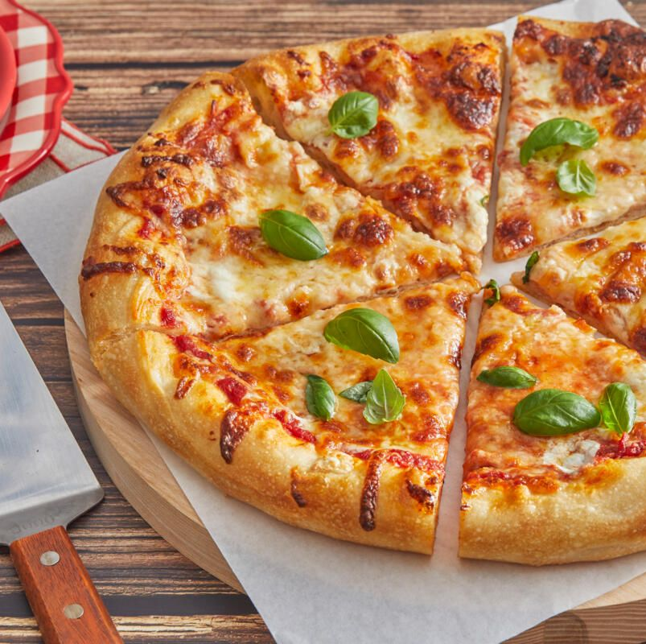

Pizza

Description
Pizza is a popular and versatile dish that originated in Italy but has become a beloved food worldwide. It
consists of a round, flatbread crust topped with various ingredients like tomato sauce, cheese, meats,
vegetables, and herbs.
Ingredients
- Pizza dough: Store-bought or homemade pizza dough
- Tomato sauce: 1/2 to 1 cup of pizza or marinara sauce
- Cheese: Shredded mozzarella cheese or a blend of cheeses (e.g., cheddar, Parmesan, or provolone)
- Toppings (choose one or more):
- Pepperoni slices
- Sliced bell peppers
- Sliced onions
- Sliced mushrooms
- Chopped olives
- Sliced tomatoes
- Fresh basil leaves
- Italian sausage
- Ham or bacon
- Additional seasonings (optional):
- Dried oregano
- Dried basil
- Crushed red pepper flakes
- Garlic powder
Steps:
- Preheat the oven: Preheat your oven to the recommended temperature for baking pizza (typically around 475°F
or 245°C).
- Roll out the dough: Roll out the pizza dough on a lightly floured surface to your desired thickness.
Transfer it to a pizza stone, baking sheet, or pizza pan lined with parchment paper.
- Spread the sauce: Spread a thin layer of tomato sauce evenly over the dough, leaving a small border around
the edges for the crust.
- Add cheese: Sprinkle a generous amount of shredded mozzarella cheese or a cheese blend over the sauce,
ensuring even coverage.
- Add toppings: Arrange your desired toppings over the cheese, distributing them evenly across the pizza.
- Seasoning (optional): If desired, sprinkle additional seasonings like dried oregano, dried basil, crushed
red pepper flakes, or garlic powder over the toppings.
- Bake the pizza: Place the pizza in the preheated oven and bake according to the dough package instructions
or until the crust turns golden brown and the cheese is melted and bubbly.
- Remove from the oven: Once baked, carefully remove the pizza from the oven using oven mitts or a pizza peel.
Allow it to cool slightly before slicing.
- Slice and serve: Cut the pizza into slices using a pizza cutter or sharp knife. Serve hot and enjoy your
homemade pizza!